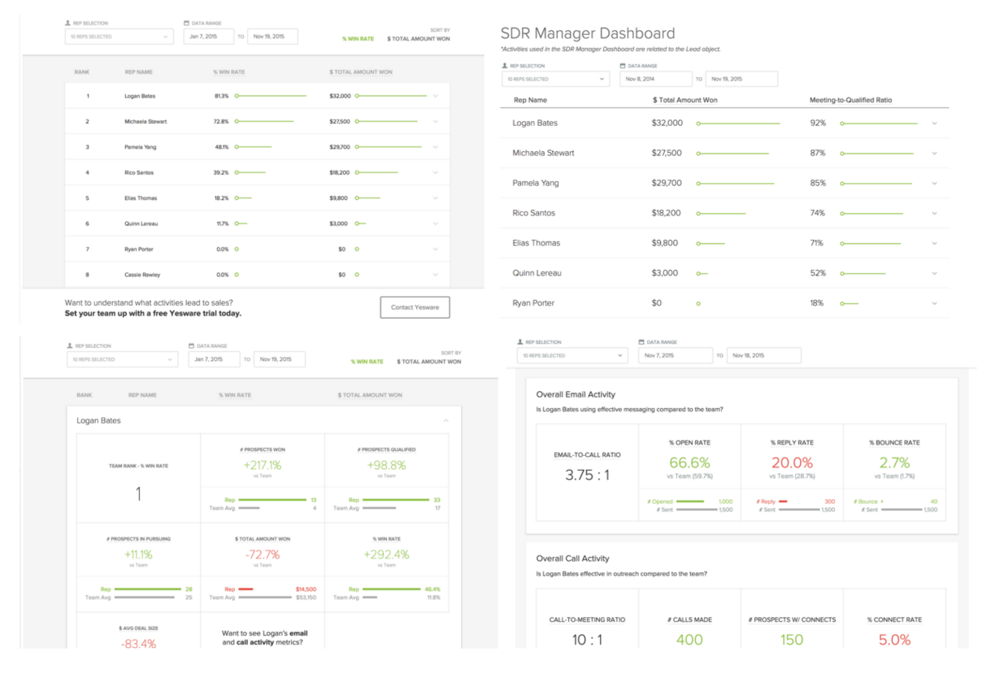
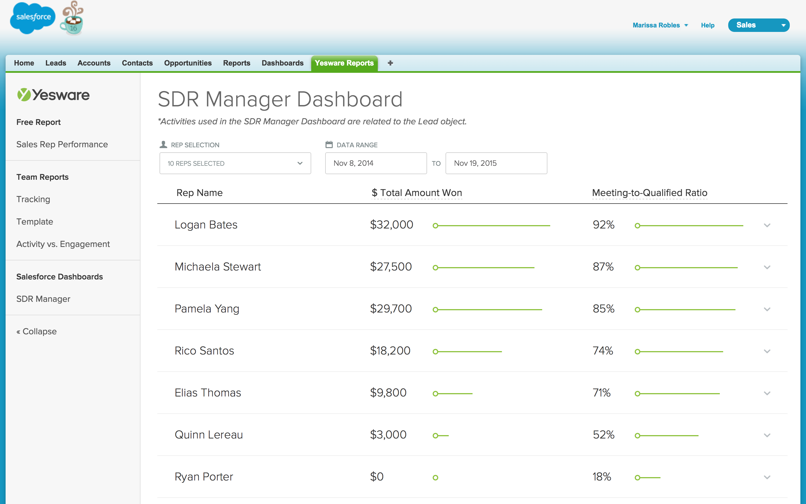
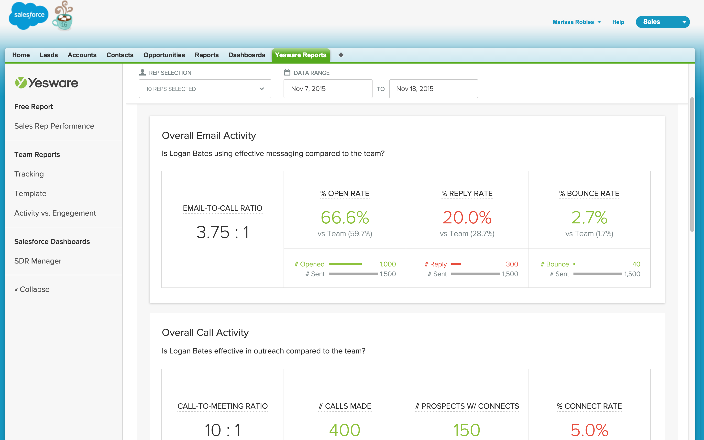
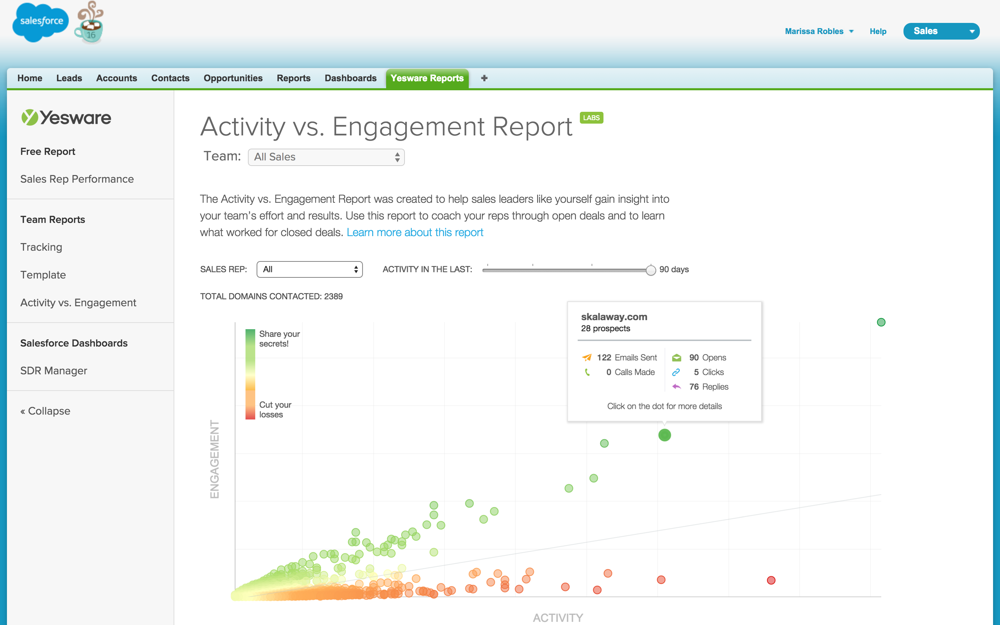
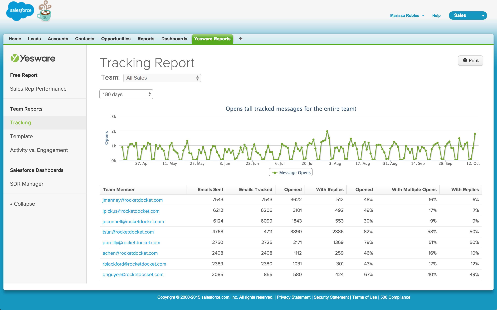
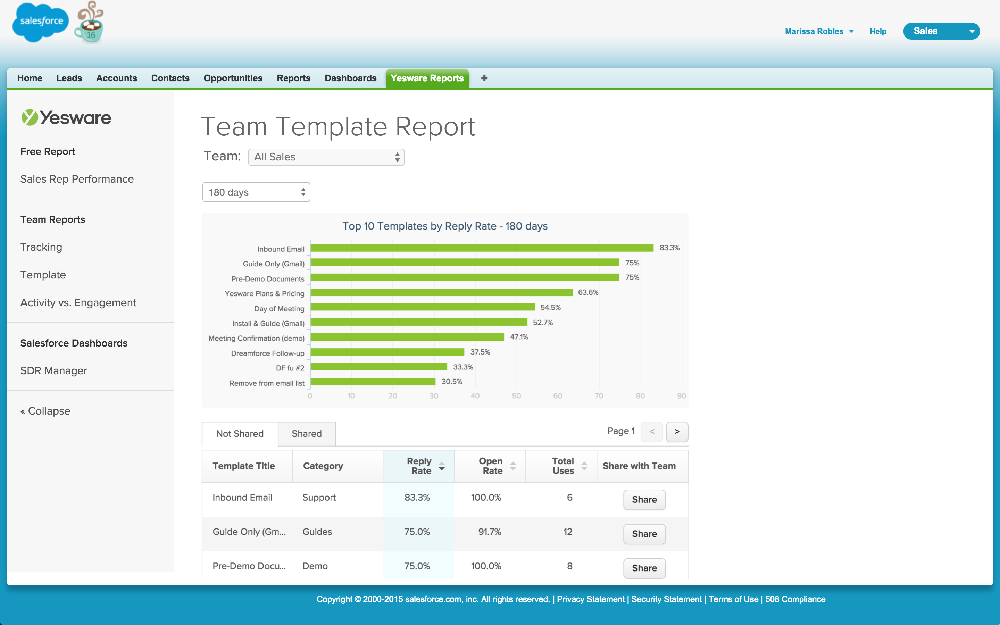
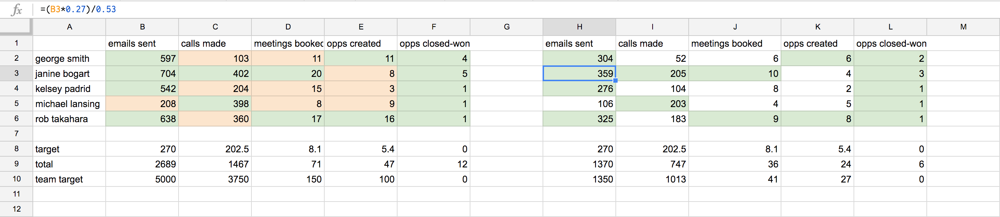
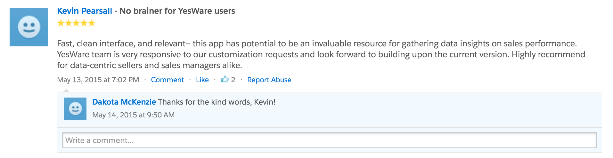
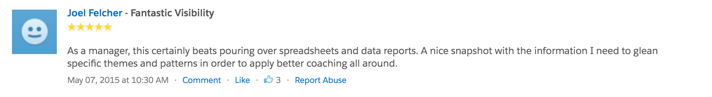

Salesforce Managed Package
7 min read
Unifying Yesware Reports and custom Yesware Dashboards in Salesforce
The Problem
The Yesware experience has always been focused on keeping the sales rep in the one place they work: their email inbox. With the shift to investing in sales managers, we learned that managers weren’t able to break away from the Salesforce interface like the reps could. To cater to the managers, do we break our philosophy of keeping the user out of the clunky Salesforce interface? Or do we attempt to integrate seamlessly into Salesforce, like we have done with Gmail and Outlook?
My Role
As the Lead Designer for the Managed Package project, I was responsible for creating low-fidelity wireframes (20%), conducting usability tests (20%), creating high-fidelity wireframes (20%), and building the frontend components in HTML, CSS, and jQuery (40%).
Toolbox
Sketch, Invision, Sublime Text 3, Pen, Paper, Whiteboard
Remember Marissa? We met her in the Manager Experience case study. During the user research sessions for the Manager Experience project, we learned that one of the most requested enhancements was to increase our reporting presence in Salesforce. Marissa and the other managers wished to cut down the number of platforms and places needed to monitor their team’s progress.
One thing that was abundantly clear in the beginning was that the majority of sales managers lived in Salesforce—not by choice but because all the information they needed to report to their VPs was in Salesforce. Even though our sales rep experience is targeted around keeping reps in their inbox, we couldn’t apply the same method to the sales managers.
Therefore, I collaborated with our in-house Salesforce expert and our development team to build a Salesforce managed package that would host all of our existing Yesware reports and one new Salesforce dashboard that we had yet to create.
Getting the existing Yesware Reports into Salesforce was pretty straightforward. All we needed to figure out on the design side was to determine how these reports would be presented in Salesforce. The biggest chunk that we needed to plan was the new Salesforce dashboard that would be included as a part of this new managed package.
We didn’t do any formal user research for this project for 2 reasons:
- We were on a tight schedule and had 4 weeks to complete the project from ideation to production.
- We had a good place to start from. Our Salesforce expert talked to customers everyday about their reporting needs and helped them build these reports. This meant that she had 2 years of feedback and sample reports that she had created for customers in the past, so all we needed to do was organize these metrics and focus on how we wanted to convey this information.
After sifting through these reports, we decided to take one of the existing Salesforce reports that she had built and visualize it in a different manner. One of the limitations with native Salesforce reporting is that it lacks customization of the layouts and visual elements. While this can be a good thing (because it enables anyone to easily create reports on the fly), the reports can become cluttered, complicated, and difficult to digest in one sitting.
Now that we knew what we wanted to create, the two of us began to scope out everything that would need to be done. Since neither the Salesforce expert nor I was a full-time developer, we decided to re-use one of the existing report templates that our colleague had created a couple months prior. This meant that most of the technical framework could be re-used, and all we had to do was focus on querying the data in Salesforce (her job) and ensure that the visuals and interactions of the template could be easily tweaked (my job).
From here, we split paths to focus on our separate tasks. I started by creating a low-fidelity wireframe to ensure that all the requirements have been met before we began to implement the new solution. I tried out a couple different layouts to make sure that this new report that we were building also fit in well with our existing reports.
Then, I took two variations of the low-fidelity mockups to test with users. In addition to testing with Sales Managers (who we were building these reports for), I also recruited people from Sales Operations (as they would be the ones downloading and installing this managed package).
Armed with this new knowledge, I took everyone’s feedback and created a high-fidelity mockup. Below, you can see the similarities between the old template and the new template. I wanted to introduce these visual tweaks to differentiate the two reports (to make the user feel like they’re getting a brand new report), improve readability (by bumping up the font size from 10px to 14px and sectioning out the cards into their own row), and make the report responsive (as we heard during the usability research that managers would love to display these reports on their TV leaderboards).
Starting template is on the left. Updated template is on the right.
The other aspect that I needed to flesh out was the permissioning of these reports. Yesware has different plans with different capability sets, and these reports fell into this model as well. Some reports were available to everyone, some to our Team and Enterprise customers, and our newest reports were only available on our Premier customers.
In addition to this permissioning of the reports, we also needed to account for different user types. These reports would only be made available to Yesware users who are logged into their accounts, so I created some teasers for new users and users who weren’t signed in so they could get a sneak peek of the value before committing to signing up.
Voila! After much wrangling and polishing, here’s our Yesware Reports package in Salesforce:
    Since the Salesforce expert and I were not full-time developers, I had to be mindful when creating the design for the new dashboards because we would be the only ones implementing these. Don’t get me wrong—I love a good 6 hours of uninterrupted coding time as much as the next person. But it does mean that I usually keep the designs pretty simple and understand that it’s not the appropriate time to experiment with crazy visualizations. (I leave those to our data-viz wizards that implemented the Activity vs. Engagement Report).
There were so many things that I learned from working 1:1 with our Salesforce expert, but I have one simple takeaway that I’ve taken to heart. She taught me that with reporting, you want to make sure that the numbers tell a compelling story. This is especially important when creating mockups or fake demo accounts because you want to be able to explain the value to the Sales Managers you’re selling to.
Never again will I bash my number keyboard when creating report mockups! After going through her spontaneous Sales Metrics Crash Course, I immediately went back to my Manager 1:1 Report mockup, Activity vs. Engagement Report mockup, and marketing assets to update the values in there. My teammates thought I went a tad overboard when I showed off my newly created Google spreadsheet that made sure my values and percentages were all calculated correctly.
We were able to publish the new managed package in time for Dreamforce 2015, the largest conference for the sales industry. The managed package was not only distributed by word of mouth but it also available on the App Exchange (Salesforce's distribution channel for managed packages). We have been seeing good traction and positive reactions, as can bee seen by the App Exchange reviews left below:
 Feel free to check out the live version on the Salesforce App Exchange.